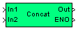

| MBDS Environment |
|
String Concat |
MATLAB Helpdesk |
General
Concatenate up to ten strings.
Library
DescriptionMBDS Blockset
All strings connected to the inputs are joined to one string. The number of inputs (min. 2 and max. 10 strings) can be configured via parameter Number of inputs in block mask. The resulting string is limited to the maximum string length specified in the Project Options.
The block has an ENO (Error Number Output) output port to indicate an error. The ENO output is set to false in case of an error, otherwise it is set to true. The ENO output port can be hidden/shown via the parameter Show ENO port in the block mask.
Inputs and Outputs
Example
Port I/O Data Type Description In1
In
uint8 (N) First string signal to concatenate In2
In uint8 (N) Second string signal to concatenate Out Out uint8 (N) Resulting string signal ENO Out boolean ENO is false if an error has been occurred. If the block has been processed correctly the ENO Output is set to true
Refer to the example.